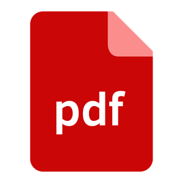
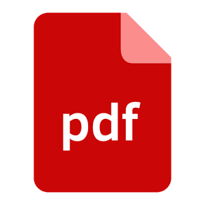

You Don't Have any File to Show!
Sent Files:
No Sent Files!
 



{{file.fileextension}} ({{file.timestamp | date: "MMM d, y" | lowercase}})
Received Files:
No Received Files!
{{file.fileextension}} ({{file.timestamp | date: "MMM d, y" | lowercase}})